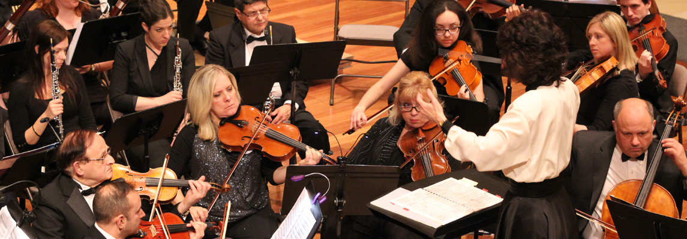
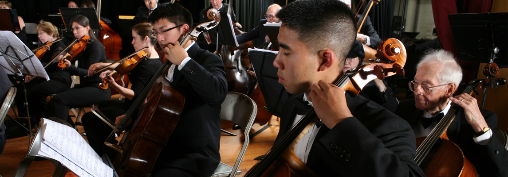
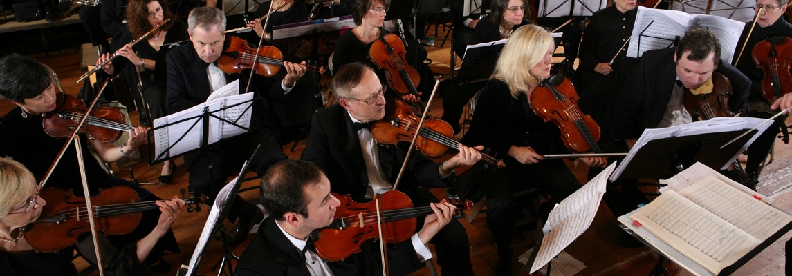
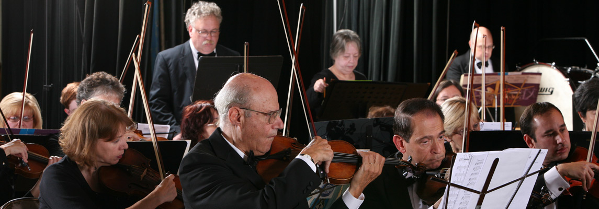
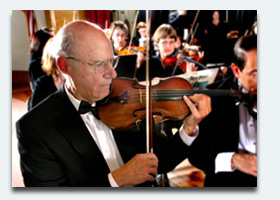

<article id="post-2" class="post-2 page type-page status-publish" itemtype='http://schema.org/CreativeWork' itemscope='itemscope'>
	<div class="inside-article">


				<div class="entry-content" itemprop="text">
			<div id="pl-2"  class="panel-layout" ><div id="pg-2-0"  class="panel-grid panel-no-style" ><div id="pgc-2-0-0"  class="panel-grid-cell" ><div id="panel-2-0-0-0" class="so-panel widget widget_sow-slider panel-first-child panel-last-child" data-index="0" ><div class="so-widget-sow-slider so-widget-sow-slider-default-abf3e628296a"><div class="sow-slider-base " style="display: none"><ul class="sow-slider-images" data-settings="{&quot;pagination&quot;:true,&quot;speed&quot;:800,&quot;timeout&quot;:6000,&quot;swipe&quot;:true}">		<li class="sow-slider-image  sow-slider-image-cover" style="background-image: url(wp-content/uploads/2017/01/Home-Slide-4.jpg)" >
																	</li>
				<li class="sow-slider-image  sow-slider-image-cover" style="background-image: url(wp-content/uploads/2017/01/Home-Slide-3.jpg)" >
																	</li>
				<li class="sow-slider-image  sow-slider-image-cover" style="background-image: url(wp-content/uploads/2017/01/Home-Slide-2.jpg)" >
																	</li>
				<li class="sow-slider-image  sow-slider-image-cover" style="background-image: url(wp-content/uploads/2017/01/Home-Slide-1.jpg)" >
																	</li>
		</ul>				<ol class="sow-slider-pagination">
											<li><a href="#" data-goto="0">1</a></li>
											<li><a href="#" data-goto="1">2</a></li>
											<li><a href="#" data-goto="2">3</a></li>
											<li><a href="#" data-goto="3">4</a></li>
									</ol>

				<div class="sow-slide-nav sow-slide-nav-next">
					<a href="#" data-goto="next" data-action="next">
						<em class="sow-sld-icon-thin-right"></em>
					</a>
				</div>

				<div class="sow-slide-nav sow-slide-nav-prev">
					<a href="#" data-goto="previous" data-action="prev">
						<em class="sow-sld-icon-thin-left"></em>
					</a>
				</div>
				</div></div></div></div></div><div id="pg-2-1"  class="panel-grid panel-no-style" ><div id="pgc-2-1-0"  class="panel-grid-cell" ><div id="panel-2-1-0-0" class="so-panel widget widget_sow-image panel-first-child" data-index="1" ><div class="so-widget-sow-image so-widget-sow-image-default-eef982a7180b">

<div class="sow-image-container">
	
</div>

</div></div><div id="panel-2-1-0-1" class="so-panel widget widget_sow-editor panel-last-child" data-index="2" ><div class="so-widget-sow-editor so-widget-sow-editor-base"><h3 class="widget-title">Next Concerts</h3>
<div class="siteorigin-widget-tinymce textwidget">
	<p><b>"All We Need is Love" </b></p>
<p>From Tchaikovsky and Wagner to the Beatles. Violin soloist: Lindsey Deutsch  </p>
<p>Friday, March 8th, 2019, 8:00pm</p>
<p>West Side Presbyterian Church<br />
6 South Monroe Street, Ridgewood, NJ</p>
<p>For tickets, <a href="../external.html?link=http://ridgewoodsymphony.org/tickets/">click here</a>.</p>
<p> </p>
<p><b>Northern Lights</b></p>
<p>Music by Nielsen, Grieg, and Sibelius. Piano soloist: Claire Huangci.</p>
<p>Friday, May 3rd, 2019, 8:00pm</p>
<p>West Side Presbyterian Church<br />
6 South Monroe Street, Ridgewood, NJ</p>
<p>For tickets, <a href="../external.html?link=http://ridgewoodsymphony.org/tickets/">click here</a>.</p>
</div>
</div></div></div><div id="pgc-2-1-1"  class="panel-grid-cell" ><div id="panel-2-1-1-0" class="so-panel widget widget_sow-image panel-first-child" data-index="3" ><div class="so-widget-sow-image so-widget-sow-image-default-813df796d9b1">

<div class="sow-image-container">
	
</div>

</div></div><div id="panel-2-1-1-1" class="so-panel widget widget_sow-editor panel-last-child" data-index="4" ><div class="so-widget-sow-editor so-widget-sow-editor-base"><h3 class="widget-title">Stephen Culbertson, Artistic Director &amp; Conductor </h3>
<div class="siteorigin-widget-tinymce textwidget">
	<p>"Please join us for our 79th season and experience the thrilling sound of a live symphony orchestra up close!" <b>-</b> <a href="artistic-staff/index.html">Click here for more information</a></p>
</div>
</div></div></div><div id="pgc-2-1-2"  class="panel-grid-cell" ><div id="panel-2-1-2-0" class="so-panel widget widget_sow-image panel-first-child" data-index="5" ><div class="so-widget-sow-image so-widget-sow-image-default-813df796d9b1">

<div class="sow-image-container">
	
</div>

</div></div><div id="panel-2-1-2-1" class="so-panel widget widget_sow-editor panel-last-child" data-index="6" ><div class="so-widget-sow-editor so-widget-sow-editor-base"><h3 class="widget-title">About the RSO</h3>
<div class="siteorigin-widget-tinymce textwidget">
	<p>Please send an email to <a class="style23" href="mailto:personnel@RidgewoodSymphony.org">Personnel@RidgewoodSymphony.org</a></p>
<p>The Ridgewood Symphony Orchestra is a regional intergenerational orchestra composed of talented volunteer musicians located in Ridgewood, New Jersey. Supported by the surrounding communities and friends in neighboring areas, the orchestra serves the Northern New Jersey region with many musical and educational activities. For more information, click here.</p>
<p> </p>
</div>
</div></div></div></div></div>					</div><!-- .entry-content -->
			</div><!-- .inside-article -->
</article><!-- #post-## -->
